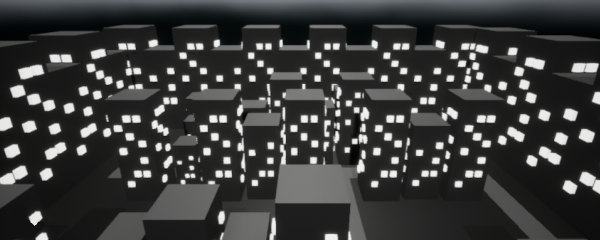
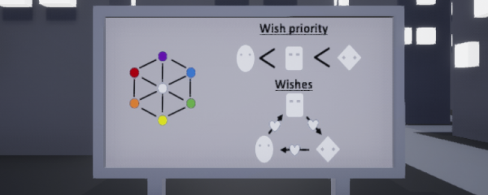
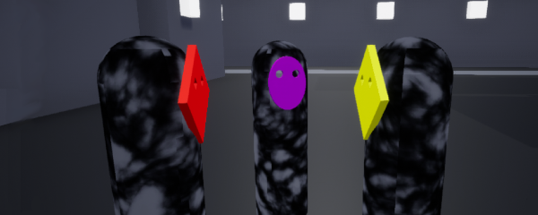

Try not to be weird
A Global Game Jam puzzle game
Game Overview
Try not to be weird is a low-poly, dark "puzzle" game made in about 24h while managing a Physical site for the Global Game Jam. In a strange, dark town, everyone wears their own mask when they are alone, but are quick to change it when other people come around. Be careful, you need to adapt your mask to others' as they come to talk to you if you don't want to look weird.
- Collect orbs to earn points
- Change the color and shape of your mask to fit the one that the group will choose
- Learn the rules behind mask adaptation in this town



My role and reflection
What I did
I designed and built the game interaction rules in about 24 hours while managing the Global Game Jam site.
- I implemented the rules for the social interactions to determine the color and shape of the mask dynamically depending on the characters interacting with the player
- I managed the Global Game Jam site as the main organizer
Challenges and lessons
For this Game Jam, the main challenge was to put something together in a really short amount of time while still fulfilling my duties as the main organizer of the event.
The main lesson I learned from this game is that ensuring that the rules/goals are clear to the player might often be hard since, as the designer, they often seem simpler to us than they actually are.
The game is available for free on Itch.io
Download on Itch.io